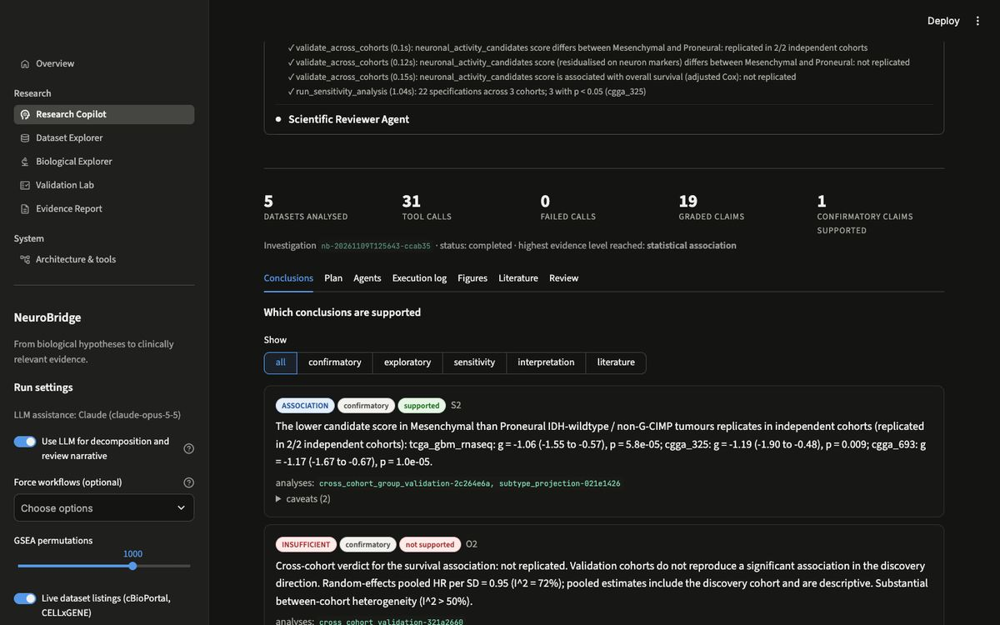

NeuroBridge · agentic research platform
Biology is complex.
Discovery shouldn't be.
An agentic AI research platform connecting biological hypotheses, multimodal data and reproducible evidence.
01 The brain
Every discovery begins with a biological question.
A glioblastoma in the temporal lobe. Where it grows, and what it grows into, shapes the questions worth asking.
Conceptual representation02 The tumour
Understanding disease requires understanding its biological environment.
Glioblastoma infiltrates living brain. Neurons, blood vessels, glia and immune cells sit inside and around the tumour.
Conceptual representation03 The cell
Inside every tumour lies a complex network of biological interactions.
A glioblastoma cell: nucleus, organelles, and long membrane protrusions called tumour microtubes that connect cells into networks.
Established structures · stylised rendering04 Neuron–tumour signalling
Neurons and tumour cells do not exist in isolation.
In mouse and patient-derived models, neurons form glutamatergic synapses onto glioma cells and release growth signals such as neuroligin-3. Whether this is visible in patients is the hypothesis NeuroBridge tests.
Shown in experimental models · hypothesis in patients05 Molecular complexity
Biological complexity generates enormous amounts of data.
Thousands of genes, transcripts and protein interactions vary from cell to cell and from patient to patient.
Conceptual representation06 Computational discovery
NeuroBridge connects biological signals across multiple scales.
Bulk RNA-seq, single cells, spatial transcriptomics, survival and the literature, analysed by seven agents in one reproducible workflow.
Real datasets · schematic views07 Testing the evidence
Every claim is tested, challenged and graded.
- Hypothesis stated before the data are touched
- Pipeline of typed, logged analyses
- Confounding checks for normal brain in every cohort
- Independent validation in cohorts never used for discovery
- Findings and open questions each with its evidence level
At a glance · reference run
01 — The scientific question
Do neurons shape glioblastoma in patients, or only in the lab?
Over the last decade, experiments have shown that neuronal activity drives glioma growth. The open question for drug discovery is translational: is that coupling visible in patient data, does it define patient subgroups, and does it relate to outcome?
Neurons form AMPA-receptor synapses onto glioma cells and secrete neuroligin-3; both promote tumour growth in mouse and patient-derived xenograft models (Venkatesh et al. 2015, 2019; Venkataramani et al. 2019).
Glioblastomas that are more functionally connected to surrounding circuits are associated with shorter survival (Krishna et al. 2023).
Expression of neuron–glioma signalling genes marks distinct tumour subgroups and predicts survival, independently of how much normal brain each sample contains.
A reproducible subgroup difference that is largely explained by normal-brain content, and no replicated survival association. The receptor genes are present in tumour tissue in one spatial section: a lead, not a conclusion.
02 — The data
Five modalities, one reproducible workflow.
Public patient cohorts for discovery and validation, single cells for localisation, a tissue section for context. Every file is downloaded, hashed and versioned.
| Dataset | n | Role |
|---|---|---|
| TCGA-GBM RNA-seq | 154 tumours | discovery cohort |
| CGGA mRNAseq 325 | 85 tumours | independent validation |
| CGGA mRNAseq 693 | 140 tumours | independent validation |
| GSE84465 single cells | 3,589 cells | cell-type localisation |
| 10x Visium section | 3,462 spots | tissue context, one patient |
| Europe PMC | records | verified literature |
Primary tumours with expression and survival. No synthetic patient data anywhere in the platform.
03 — Genes × subtype
Where the signalling genes sit across tumour subtypes.
neuron–glioma genes in TCGA tumours. Each cell is the mean z-score of a gene within one Verhaak subtype: teal above the cohort average, violet below. The six genes of the pre-specified candidate score are marked.
Selected
mean z, log2 expression standardised across all samples
Bulk tissue: a high value can come from normal brain inside the sample as well as from tumour cells. That is the confounder tested below.
04 — The agents
Seven agents. One audit trail.
An orchestrator runs specialised agents in order. Each chooses typed tools, and every call is logged with its inputs, outputs and limitations. The language model plans and critiques; it never produces a number.
Replay of run ·
05 — The validation
A result counts only when it survives an independent cohort.
Effect sizes with confidence intervals, false-discovery control, Cox models with assumption checks, and a composition control for normal brain. A single cohort is never called validated.
Mesenchymal vs Proneural tumours · IDH-wildtype
Correlation with neuron markers
Overall survival
Hedges' g and adjusted Cox hazard ratios with 95% confidence intervals. Pooled estimates are random-effects and descriptive (they include the discovery cohort). CGGA subtypes come from a classifier trained on TCGA alone, with all candidate genes excluded from its features: .
The reviewer's audit of this run
06 — Provenance
Every number on this page comes from one run.
The figures above are exported from a single reference investigation by a script, not typed by hand. The run records its seed, software versions and the checksum of every input file, so anyone can reproduce it with make demo.
Input files and checksums
| File | Source | SHA-256 |
|---|
07 — The platform
A working research application, not a mock-up.
Five modules in one Streamlit application, backed by a tested Python package. These screenshots come from a live run on the public data.

08 — The research
Questions it has answered.
Is neuronal signalling associated with glioblastoma subtypes and survival?
Association, confoundedAre NLGN3 or BDNF prognostic in IDH-wildtype glioblastoma after adjusting for age and MGMT?
Neither gene replicates: hazard ratios per SD sit between 0.81 and 1.14 with inconsistent directions across the three cohorts (run nb-20261109T112919-c0fab3).
Not replicatedWhere are the receptor genes in tissue?
In one Visium section, presynaptic SLC17A7 follows neuron-rich tissue while GRIA2 spreads through tumour regions (ρ = −0.03 with neuronal content). GAP43 rises next to neurons.
Exploratory, one patient09 — Questions
Questions and answers.
Is NeuroBridge clinical software?
No. It is a research tool for exploring public data. Nothing it reports is meant for diagnosis or treatment decisions.
Which data does it use?
TCGA-GBM RNA-seq from UCSC Xena for discovery, two Chinese Glioma Genome Atlas cohorts for independent validation, the GSE84465 single-cell dataset and one 10x Genomics Visium section. Every file is downloaded from its source and checksummed. There is no synthetic patient data.
What does the AI do, and what does it not do?
A language model can help break the question into hypotheses and can write the reviewer's narrative. It never produces a number. Statistics come from typed Python tools, and claims are built from templates and graded by rules.
Why is the bottom line mostly negative?
Because that is what the data support. The subtype difference replicates, but in bulk tissue it cannot be separated from normal-brain content, and the survival association does not replicate. Saying so is the point of the validation step.
What is still open?
A composition control based on cell-fraction deconvolution, and a check of whether the subtype classifier itself depends on neuronal genes, are being developed and are not part of the reference run shown here. The spatial results come from one patient and are leads, not findings.
Why does the app take a while to open?
The public app runs on Streamlit Community Cloud, which puts it to sleep after inactivity. The first visit wakes it, which takes about a minute. You can also run it locally with the command below.
NeuroBridge
Explore the biology. Follow the evidence.
git clone https://github.com/stefaniazoibb/neurobridge && cd neurobridge && pip install -e ".[llm]" && streamlit run app/streamlit_app.pyHosted on Streamlit Community Cloud. To run it yourself, use the command above.